<div class="d-flex flex-column h-100">
  <div class="contenu-scrollable">
    <div class="header-container">
      <jhi-shopping-header></jhi-shopping-header>
    </div>
    <div class="main-container">
      <jhi-shopping-breadcrumb></jhi-shopping-breadcrumb>
      <div class="filter-and-items-container shopping-container d-flex flex-row">
        <div class="filter-container" *ngIf="screenWidth > 960">
          <ng-container *ngTemplateOutlet="template_filter"></ng-container>
        </div>
        <div class="items-container">
          <jhi-shopping-articles></jhi-shopping-articles>
        </div>
      </div>
      <jhi-shopping-footer></jhi-shopping-footer>
    </div>
  </div>

  <div class="fixed-filter-button-container" *ngIf="screenWidth <= 960">
    <button class="btn blue-shopping-btn fixed-filter-button d-flex align-items-center justify-content-center" (click)="toggleFilters()">
      
      <div>Filtres</div>
    </button>

    <div class="fixed-filter-popup" [class.display-none]="!showFilters">
      <div class="fixed-filter-header d-flex align-items-center justify-content-end">
        <div class="close-filter-button d-flex align-items-center justify-content-center cursor" (click)="closeFilters()">
          <em class="fa-solid fa-times" style="font-size: 1.5rem"></em>
        </div>
      </div>
      <ng-container *ngTemplateOutlet="template_filter"></ng-container>
    </div>
  </div>
</div>

<ng-template #template_filter>
  <jhi-shopping-filter></jhi-shopping-filter>
</ng-template>
